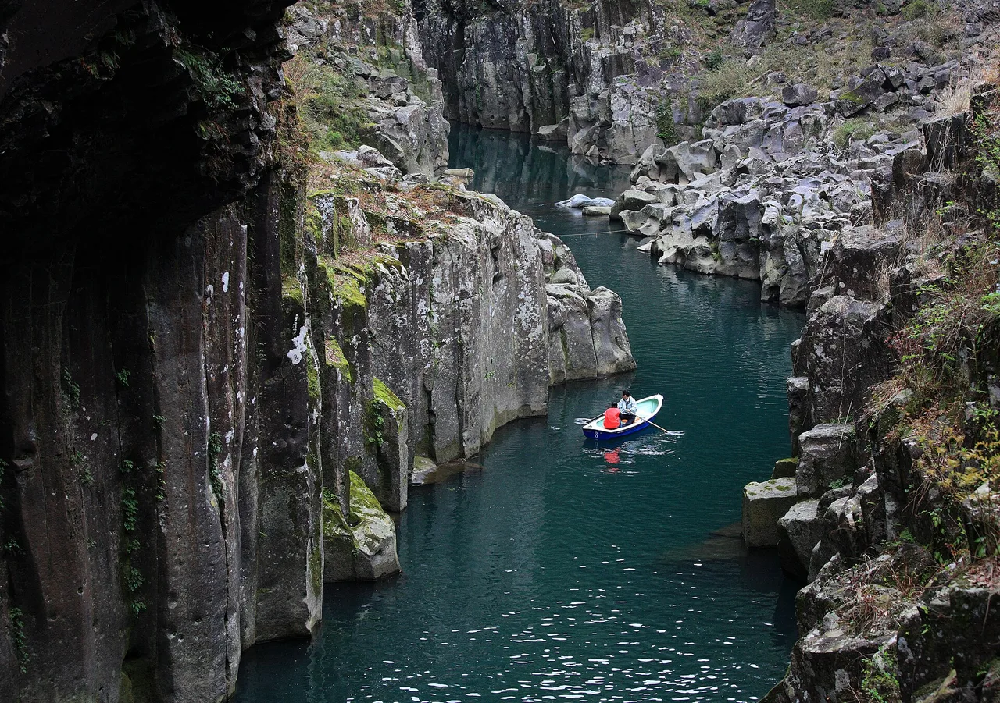

Miyazaki Travel Guide for Japanese Learners
Sunny Pacific coast, surf, and shrines wrapped in myth.

Miyazaki on Kyūshū's southeast coast has a mild, sunny climate, palm-lined drives, and deep ties to Japan's creation myths at Takachiho Gorge.
History & background
Miyazaki (宮崎) is steeped in Japan's creation myths; Takachiho (高千穂) is said to be where the sun goddess's grandson descended to earth. Its sunny coast made it a honeymoon hotspot in the Shōwa era.
What to see
- Takachiho Gorge
- Udo Shrine in a seaside cave
- Aoshima island and shrine
- Nichinan coast
Hidden gems
- Kirishima National Park offers volcanic mountain trails, hot springs, and crater lakes with fewer crowds than Takachiho, perfect for hiking and nature bathing.
- Hyūga coast's Cape Tojimbana features dramatic sea cliffs, a historic lighthouse, and coastal walking paths with views toward the Pacific horizon.
- Saitobaru Kofun preserves hundreds of ancient burial mounds scattered across grassland, revealing Japan's pre-Buddhist era in one of the country's largest concentrations.
Some links above are affiliate links. We may earn a commission at no extra cost to you. We only list services we'd use ourselves.
What to eat
Chicken nanban and Miyazaki mango.
Getting there & when to go
Getting there: Miyazaki is reached by air from major cities, or by limited express within Kyūshū.
Best time: Summer for surf and mango; any season for the mild coast.
When to go — season by season
Warm and sunny much of the year. Summer suits surfing and mango season; autumn is good for the gorge and shrines.
Local culture
Miyazaki's fishing culture runs deep—morning markets burst with fresh swordfish, flying fish, and sea bream that locals grill simply with salt. You'll notice fishermen's cooperatives dotting coastal towns, and restaurants proudly display their catch on ice, inviting diners to point and order.
The prefecture maintains strong shamanic and shrine-keeper traditions rooted in Shinto practices. Locals regularly visit neighborhood shrines for seasonal blessings, and you may encounter miko (shrine maidens) performing purification rituals or selling ema (wooden prayer plaques) in their casual, friendly manner.
A suggested visit
Row a boat beneath the waterfall in Takachiho Gorge and see its night kagura dance, then follow the Nichinan (日南) coast to the cave shrine of Udo Jingū (鵜戸神宮) and palm-fringed Aoshima (青島).
Seasonal tip: Late July through August brings peak mango season and summer swells for surfers, but expect intense humidity and afternoon thunderstorms typical of Kyūshū's tsuyu transition period.
Local etiquette: When visiting Udo Shrine's cave shrine, remove your shoes on the wooden platform before stepping onto the sacred sand; the shrine staff will indicate where to leave them, and climbing barefoot is both respectful and practical on the damp stones.
Row a boat into Takachiho Gorge for the classic view of the waterfall up close.
Some links above are affiliate links. We may earn a commission at no extra cost to you. We only list services we'd use ourselves.
Common questions
Q. How do I get to Miyazaki from Tokyo?
A. Fly directly to Miyazaki Airport from major cities, or take a limited express train within Kyūshū. Flying is faster, but trains let you explore other Kyūshū stops en route.
Q. What's the best time to visit Miyazaki?
A. Summer peaks for surfing and fresh Miyazaki mango season, but the mild Pacific coast stays pleasant year-round. Visit outside summer to avoid crowds at Takachiho Gorge.
Q. Is Udo Shrine difficult to reach?
A. Udo Shrine sits in a seaside cave and requires stairs down the cliff, but the mild coastal climate makes the walk manageable most of the year. Wear sturdy shoes.